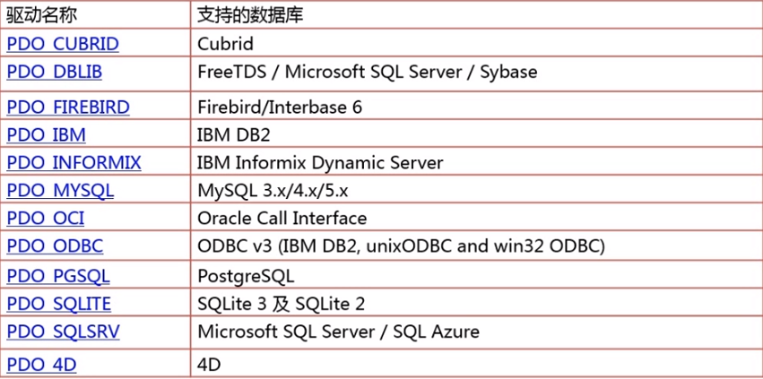
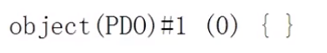
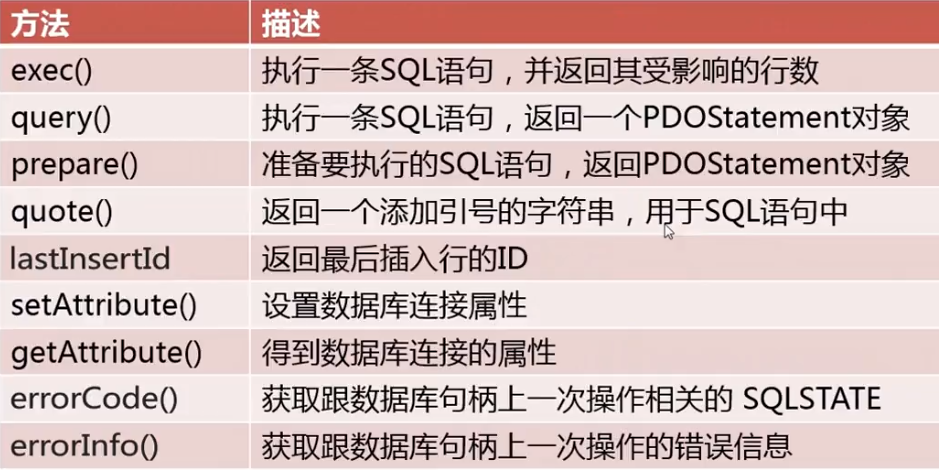
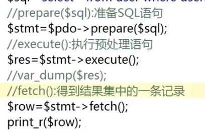

原文连接:https://www.cnblogs.com/dashucoding/p/10780708.html
php简介，php历史，php后端工程师职业前景，php技术方向，php后端工程师职业体系介绍。
php是世界上使用最广泛的web开发语言，是超文本预处理器，是一种通用的开源脚本语言，语法吸收了c语言，Java语言，和Perl的特点，利于学习，使用广泛，主要适用于web开发，PHP做出来的动态页面与其他的编程语言相比，PHP是将持续嵌入到HTML文档中去执行，执行效率比完全生成HTML标记的CGI要高许多，PHP还可以执行编译后的代码，编译后可以达到加密和优化代码的目的，让代码运行更快。
PHP是在1994年由Rasmus Lerdorf创建的，开始只是一个简单的用Perl语言编写的程序，用来统计他自己的网站的访问者，后来通过c语言的重写编写，可以访问数据库，1995年开始对外发布第一个版本，名Personal Home Page Tools，随后发布了php 1.0版本。
1995年，php2.0发布了。1997年，php3发布，2004年，PHP5.0发布了。
PHP的使用更加广泛，web3.0的升温，PHP是优秀的web开发语言，linux,apache,mysql黄金组合。
web后端技术，web前端技术与PHP语言，linux操作系统，mysql数据库，各种php开发框架，缓存技术和海量数据优化技术，系统调优和负载均衡技术。
HTML入门，JavaScript入门，PHP语言基础，源码管理工作，mysql数据库。
Linux操作系统，PHP面向对象，语言高级开发技术，常用PHP开发框架，PHP与公共api接口开发，PHP测试工具。
深入学习http协议，PHP环境高级配置，mysql数据库优化技术，静态化和缓存技术，网站安全技术。
深入分析PHP框架源代码，深入学习PHP内核，noSQL型数据库，集群与负载均衡技术。
深入学习Linux操作系统，多级缓存技术，海量数据优化技术，容灾技术，大型系统框架设计方法。
数据库PDO简介：
pdo简介，安装与配置，pdo链接数据库，pdo对象方法介绍以及使用，pdostatement对象方法介绍以及使用，pdo错误处理，pdo参数绑定与预处理，pdo事务处理，pdo实战。
pdo是数据库访问抽象层，统一各种数据库的访问接口。
pdo特性，编码一致性，灵活性，高性能，面向对象特性。

开启pdo:
extension = php_pdo.dllextension = php_pdo_mysql.dll通过参数形式连接，通过uri形式连接，通过配置文件形式连接数据库。
<?php
// 通过参数形式连接数据库
try {
$dsn = 'mysql:host=localhost; dbname=dashucoding';
$username=‘root’;
$passwd='root';
$pdo=new PDO($dsn, $username, $passwd);
var_dump($pdo);
}catch(PDOException $e){
echo $e -> getMessage();
}
<?php
// 通过uri的形式连接数据库
try {
$dsn='uri:file//文件路径\dsn.txt';
$username='root';
$passwd='root';
$pdo = new PDO($dsn, $username, $password);
var_dump($pdo);
}catch(PDOException $e){
echo $e->getMessage();
}mysql:dbname=dashucoding; host=localhost
插入记录操作
<?php
try{
$pdo = new PDO('mysql:host=localhost;dbname='dashucoding','root','root');
// exec对select没有作用
// exec()执行一条语句并返回其受影响的记录条数
$sql = <<<EOF
CREATE TABLE IF NOT EXISTS user(
id INT UNSIGNED AUT_INCREMENT key,
username varchar(20) not null unique,
password CHAR(32) not null,
email varchar(30) not null
);
EOF;
$res = $pdo -> exec($sql);
var_dump($res);
$sql='insert user(username,password,email) values ('dashu',"'.md5('dashu').'","23@qq.com")'));
}catch(PDOException $e){
echo $e -> getMessage();
}errorCode()和errorInfo()方法查看错误信息
<?php
header('content-type:text/html; charset=utf-8');
try{
$pdo = new PDO('mysql:host=localhost; dbname=dashucoding', 'root', 'root');
$res = $pdo->exec($sql);
var_dump($res);
if($res === false){
echo $pdo -> errorCode();
echo '<br/>';
echo $pdo -> errorInfo();
print_r($errInfo);
}
}catch(PDOException $e){
echo $e->getMessage();
}query()方法执行查询语句
<?php
header('content-type:text/html; charset=utf-8');
try{
$pdo = new PDO('mysql:host=localhost; dbname=dashucoding', 'root', 'root');
$sql = 'select * from user where id = 3';
$stmt = $pdo -> query($sql);
var_dump($stmt);
foreach($stmt as $row){
}
}catch(PDOException $e){
echo $e -> getMessage();
}
了解pdo，连接数据库的方法，pdo中执行sql语句的方法，pdo中获取结果集的方法，掌握pdo中获取sql语句中的错误，错误处理的方法，事务处理，pdo中存储过程。
pdo是PHP数据对象。
pdo是一个数据库访问抽象层，可以统一各种数据库的访问接口。
安装pdo，linux环境下，要使用mysql数据库configure命令：
--with-pdo-mysql=/path/to/mysql/installationpdo连接数据库：
<?php
$dbms = 'mysql';
$dbName = 'db_database';
$user = 'root';
$pwd = 'root';
$host = 'localhost';
$dsn = "$dbms:host=$host; dbname=$dbName";
try{
$pdo = new PDO($dsn, $user, $pwd);
echo "pdo连接mysql成功";
}catch(Exception $e){
echo $e -> getMessage()."<br>";
}
?>dsn:数据源名称
username:连接数据库的用户名
password:连接数据库的密码
driver_options:连接数据库的其他选项
<?php
header('Content-Type:text/html; charset=utf-8");
$dbms='mysql';
$dbName='db_database';
$user='root';
$pwd='root';
$host='localhost';
$dsn="$dbms:host=$host;dbname=$dbName";
try{
$pdo=new PDO($dsn, $uer, $pwd);
echo "PDO连接Mysql成功";
}catch(Exception $e){
echo $e->getMessage()."<br>";
}
?>dsn为数据源，提供连接数据库需要的信息。
pdo执行sql语句：
exec()方法
exec 方法返回执行sql语句后受影响的行数
int PDO::exec(string statement)
参数statement要执行的sql语句通用insert,delete和update
<?php
$dbms = 'mysql';
$dbName='db_database';
$user='root';
$pwd='root';
$host='localhost';
$dsn = "$dbms:host=$host; dbname=$dbName";
$query="delete from tb_da where id=2"; // sql语句
try{
$pdo = new PDO($dsn, $user, $pwd);
$affCount=$pdo -> exec($query);
echo "删除条数".$affCount;
}catch(Exception $e){
echo "".$e->getMessage()."<br>";
}
?>query()方法
query()方法通常用于返回执行查询后的结果集
PDOStatement PDO::query(string statement)<table width="200" border="0" bgcolor="#FF3377">
<tr>
<td></td>
</tr>
</table>
<?php
$dbms = 'mysql';
$dbName='db_database';
$user='root'
$pwd='root';
$dsn="$dbms:host=$host; dbname=$dbName";
$query = "select * from tb_da";
try{
$pdo = new PDO($dsn, $user, $pwd);
$result=$pdo->query($query); // 输出结果集中的数据
foreach($result as $row){ // 输出结果集中的数据
}catch(Exception $e){
echo $e->getMessage()."<br>";
}
?>预处理语句:prepare()和execute()
prepare()方法做查询的准备工作，execute()方法执行查询，bindParam()方法来绑定参数提供给execute()方法
PDOStatement PDO::prepare(string statement [, array driver_options])
bool PDOStatement::execute([array input_parameters])prepare()和execute()方法：
<?php
$dbms = 'mysql';
$host = 'localhost';
$dbName = 'db_da';
$user='root';
$pass='root';
$dsn="$dbms:host=$host;dbname=$dbName";
try{
$pdo=new PDO($dsn, $user, $pass);
$query = "select * from tb_mysql";
$result = $pdo->prepare($query);
$result->execute();
while($res = $result->fetch(PDO::FETCH_ASSOC)){
}catch(PDOException $e){
die($e->getMessage()."<br/>");
}
?>php中获取结果集的方法
fetch()方法获取结果集中的下一行数据
fetchAll()方法获取结果集中的所有行
fetchColumn()方法获取结果集中下一行指定的列的值
fetch()方法：参数
mixed PDOStatement::fetch( fetch_style, cursor_orientation, int_cursor_offset)PDO::FETCH_ASSOC关联数组形式
PDO::FETCH_NUM数字索引数组形式
PDO::FETCH_BOTH两者数组形式都有
PDO::FETCH_OBJ按照对象的形式
PDO::FETCH_BOUND以布尔值的形式返回结果
PDO::FETCH_LAZY 以关联数组，数字索引，和对象三种形式返回
cursor_orientation:PDOStatement对象的一个滚动游标
cursor_offset:游标的偏移量
<?php
$dbms = 'mysql';
$host='localhost';
$dbName='db_database';
$user='root';
$pass='root';
$dsn = "$dbms:host=$host;dbname=$dbName";
try{
$pdo = new PDO($dsn, $user, $pass);
$query = "select * from tb_pdo_mysql";
$result = $pdo->prepare($query);
$result->execute();
while($res=$result->fetch(PDO::FETCH_ASSOC)){
}catch(PDOException $e){
die( $e->getMessage()."<br/>");
}
?><?php
$dbms='mysql'; // 数据库类型，对于开发者来说，使用不同的数据库，只要该这个就行
$host='localhost';
$dbName='db_database';
$user = 'root';
$pass = 'root';
$dsn = "$dbms:host=$host; dbname=$dbName";
try{
$pdo = new PDO($dsn,$user,$pass);
$query = "select * from tb_pdo_mysql";
$result=$pdo->prepare($query);
$result->execute();
while($res=$result->fetch(PDO::FETCH_ASSOC){
}catch(PDOException $e){
die( $e -> getMessage() );
}
?>fetchAll()方法获取结果集中的所有行
array PDOStatement::fetchAll();
参数fetch_style:控制结果集中数据的返回方式
参数column_index:字段的索引
返回的是包含结果集中所有数据的二维数组<?php
$dbms = 'mysql';
$host = 'localhost';
$dbName = 'db_database';
$user = 'root';
$pass = 'root';
$dsn = "$dbmms:host=$host; dbname = $dbName";
try{
$pdo = new PDO($dsn, $user, $pass);
$query = "select * from tb_pdo_mysql";
$result=$pdo -> prepare($query);
$result->execute();
$res=$result->fetchAll(PDO::FETCH_ASSOC);
for($i=0;$i<count($res);$i++){
?>
<tr>
<td height="22" align="center" valign="middle"><?php echo $res[$i]['id'];?></td>
<td align="center" valign="middle"><?php echo $res[$i]['pdo_type'];?</td>
</tr>
<?php
}
}catch(PDOException $e){
die("Error!:".$e->getMessage()."<br/>");
}
?>fetchColumn()方法
获取结果集中下一行指定列的值：
string PDOStatement::fetchColumn()参数column_number设置行中列到的索引值，该值从0开始，省略该参数将从第1列开始取值。
<?php
$dbms = 'mysql';
$host = 'localhost';
$dbName = 'db_database';
$user = 'root';
$pass = 'root';
$dsn = "$dbms:host=$host;dbname=$dbName";
try{
$pdo = new PDO($dsn, $user, $pass);
$query = " select * from tb_pdo_mysql";
$result = $pdo -> prepare($query); // 准备查询语句
$result -> execute(); // 执行查询语句
?>
<tr>
<td><?php echo $result->fetchColumn(0);?></td>
<td><?php echo $result->fetchColumn(0);?></td>
<td><?php echo $result->fetchColumn(0);?></td>
<td><?php echo $result->fetchColumn(0);?></td>
</tr>
<?php
}catch(PDOException $e) {
die("Error!:".$e->getMessae()."<br/>");
}
?>pdo中捕获sql语句中的错误
使用默认模式
PDO::ERRMODE_SILENT
pdo::errmode_silent
使用警告模式
PDO::ERROMODE_WARNING
pdo::erromode_warning
使用异常模式
PDO::ERRMODE_EXCEPTION
pdo::errmode_exception
// pdo连接数据库mysql，通过预处理prepare()和execute()方法执行insert添加操作
<?php
if($_POST['Submit']=="提交"&&$_POST['pdo']!=""){
$dbms = 'mysql';// 数据库类型
$host = 'localhost'; // 数据库主机名
$dbName = 'db_database'; // 使用的数据库
$user = 'root'; // 数据库的连接用户名
$pass = 'root'; // 对应的密码
$dsn = "$dbms:host=$host; dbname=$dbName";
$pdo = new PDO($dsn, $user, $pass);
$query = "insert into tb_pdo_mysql(pdo_type, database_name,dates) values ("", $_POST['pdo'].", ".$_POST['databases'].",".$_POST['dates'].")";
$result = $pdo->prepare($query);
$result -> execute();
$code = $result->errorCode();
if(empty($code)){
echo "数据添加成功!"'
}else{
echo "数据添加错误:<br/>";
echo 'sql query:'.$query;
echo '<pre>';
var dump($result->errorInfo());
echo '</pre>';
}}
?>// 设置警告模式，通过prepare()和execute()方法读取数据库中数据
// setAttribute()方法设置为警告模式
<?php
$dbms = 'mysql'; // 数据库类型
$host = 'localhost'; // 数据库主机名
$dbName = 'db_database'; // 数据库连接用户名
$user = 'root';
$pass = 'root';
$dsn="$dbms:host=$host; dbname=$dbName";
try{
$pdo = new PDO($dsn, $user, $pass);
$pdo->setAttribute(PDO::ATTR_ERRMODE, PDO::ERRMODE_WARNING); // 设置为警告模式
$query = "select * from tb_pdo_mysqls"; // 定义sql语句
$result = $pdo -> prepare($query); // 准备查询语句
$result->execute(); // 执行查询语句，并返回结果集
while($res=$result->fetch(PDO::FETCH_ASSOC)){
?>
<tr>
<td><?php echo $res['id'];?></td>
<td><?php echo $res['date'];?></td>
</tr>
<?php
}
}catch(PDOException $e){
die("Error!:".$e->getMessage()."<br/>");
}
?>// 异常模式
<?php
heder("Content-type: text/html; charset="utf-8"); // 设置文件编码格式
if($_GET['conn_id']!=""){
$dbms = 'mysql';//数据库类型
$host = 'localhost';
$dbName='db_database';
$user='root';
$pass='root';
$dsn = "$dbms:host=$host; dbname=$dbName";
try {
$pdo = new PDO($dsn, $user, $pass);
$pdo -> setAttribute(PDO::ATTR_ERRMODE, PDO::ERRMODE_EXCEPTION);
$query="delete from tb_pdo_mysqls where Id=:id";
$result = $pdo->prepare($query); // 预准备语句
$result = bindParam(':id', $_GET['conn_id']); // 绑定更新的数据
$result -> execute();
}catch(PDOException $e) {
echo 'PDO Exception Caught.';
echo 'Error with the database:<br/>';
echo 'SQL Query:'.$query;
echo '<pre>';
echo "Erro:".$e->getMessage()."<br/>";
echo "File:".$e->getCode()."<br/>";
echo "Line:".$e->getFile()."<br/>";
echo "Trace:".$e->getTranceAsString()."<br/>";
echo '</pre>';
}}
?>pdo中错误处理：
errorCode()方法和errorInfo()方法
errorCode()方法用于获取在操作数据库句柄时所发生的错误代码。
int PDOStatement::errorCode(void)errorCode()方法返回一个sqlstate代码。
<?php
$dbms='mysql'; // 数据库类型
$host='localhost'; // 数据库主机名
$dbName = 'db_database'; // 使用的数据库
$user = 'root'; // 数据库连接用户名
$pass = 'root' 对应的密码
$dsn = "dbms:host = $host; dbname = $dbName";
try{
$pdo = new PDO($dsn, $user, $pass);
$query = "select * from tb_pdo_mysqls"; // 定义sql语句
$result = $pdo -> query($query); // 执行查询语句，并返回结果集
echo "errorCode为: ".$pdo->errorCode();
foreach($result as $items){
?>
<tr>
<td><?php echo $items['id'];?></td>
</tr>
<?php
}
}catch(PDOException $e){
die("Error!:" . $e->getMessage()."<br/>");
}
?>errorInfo()方法用于获取操作数据库句柄时所发生的错误的信息。
array PDOStatement::errorInfo(void)<?php
$dbms = 'mysql';
$host = 'localhost';
$dbName = 'db_database';
$user = 'root';
$pass = 'root';
$dsn = "$dbms:host=$host; dbname=$dbName";
try{
$pdo = new PDO($dsn, $user, $pass); // 初始化一个pdo对象，创建数据库连接对象$pdo
$query = "select * from tb_pdo_mysqls"; // 定义sql语句
$result = $pdo -> query($query); // 执行查询语句
print_r($pdo->errorInfo());
foreach($result as $items){
?>
<tr>
<td><?php echo $items['id'];?></td>
<td><?php echo $items['pdo_type'];?></td>
</tr>
<?php
}
}catch(PDOException $e){
die("Error!:".$e->getMessage()."<br/>");
}
?>pdo中事务处理：
开启事务：beginTransaction()方法
beginTransaction()方法将关闭自动提交autocommit模式，直到事务提交或者回滚以后才恢复
提交事务：commit()方法
commit()方法完成事务的提交操作，成功返回true,否则为false
事务回滚：rollBack()方法
通过prepare和execute()方法向数据库中添加数据，并且通过事务处理机制确保数据能够正确地添加到数据库中
通过beginTransaction()方法开启事务
通过$_POST[] 方法获取表单中提交的数据
通过prepare()和execute()方法向数据库中添加数据
通过commit()方法完成事务的提交操作
rollBack()方法执行事务的回滚操作
<?php
if($_POST['Submit']=="提交" && $_POST['pdo']!=""){
$dbms = 'mysql'; //数据库类型
$host = 'localhost'; // 数据库主机名
$dbName = 'db_database''; // 数据库
$user='root';
$pass='root';
$dsn = "$dbms:host=$host; dbname=$dbName";
try{
$pdo=new PDO($dsn, $user, $pass);
$pdo -> beginTransaction(); // 开启事务
$query="insert into tb_pdo_mysql(pdo_type, database_name, dates) values ("", $_POST['pdo'].",".$_POST['databases'].",".$_POST['dates'].")";
$result = $pdo->prepare($query);
if($result->execute()){
echo "数据添加成功";
}else{
echo "数据添加失败";
}
$pdo->commit(); // 执行事务的提交操作
}catch(PDOException $e){
die("Error!:".$e->getMessage()."<br/>");
$pdo->rollBack();
}
}
?>pdo中存储过程
pdo中调用存储过程：
drop procedure if exists pro_reg;
delimiter //
create procedure pro_reg(in nc varchar(80), in pwd varchar(80), in email varchar(80), in address varchar(50))
begin
insert into ...
end;
// 用户注册：用户昵称，注册密码，e-mail，家庭地址。
<title>用户注册</title>
<form name="form1" method="post" action="index.php" onsubmit="return chkinput(this)">
</form>
<?php
if($_POST['submit']!=""){
$dbms='mysql'; //数据库类型
$host='localhost'; //数据库主机名
$dbName='db_database'; //使用的数据库
$user='root'; //数据库连接用户名
$pass='root'; //对应的密码
$dsn="$dbms:host=$host;dbname=$dbName";
try {
$pdo = new PDO($dsn, $user, $pass); //初始化一个PDO对象
$pdo->query("set names utf8"); //设置数据库编码格式
$pdo->setAttribute(PDO::ATTR_ERRMODE,PDO::ERRMODE_EXCEPTION);
$nc=$_POST['nc'];
$pwd=md5($_POST['pwd']);
$email=$_POST['email'];
$address=$_POST['address'];
$query="call pro_reg('$nc','$pwd','$email','$address')";//call调用存储过程
$result=$pdo->prepare($query);
if($result->execute()){
echo "数据添加成功！";
}else{
echo "数据添加失败！";
}
} catch (PDOException $e) {
echo 'PDO Exception Caught.';
echo 'Error with the database:<br/>';
echo 'SQL Query: '.$query;
echo '<pre>';
echo "Error: " . $e->getMessage(). "<br/>";
echo "Code: " . $e->getCode(). "<br/>";
echo "File: " . $e->getFile(). "<br/>";
echo "Line: " . $e->getLine(). "<br/>";
echo "Trace: " . $e->getTraceAsString(). "<br/>";
echo '</pre>';
}
}
?>
<script language="javascript">
function chkinput(form){
if(form.nc.value==""){
alert("请输入用户昵称!");
form.nc.select();
return(false);
}
if(form.pwd.value==""){
alert("请输入注册密码!");
form.pwd.select();
return(false);
}
if(form.email.value==""){
alert("请输入E-mail地址!");
form.email.select();
return(false);
}
if(form.address.value==""){
alert("请输入家庭地址!");
form.address.select();
return(false);
}
return(true);
}
</script><?php
header("Content-Type:text/html;charset=utf-8");
$dbms='mysql';
$dbName='db_database';
$user='root';
$pwd='root';
$host='localhost';
$dsn="$dbms:host=$host;dbname=$dbName";
?>
<form action="" method="post">
<div>
<span>PDO插入数据</span><br>
用户名：<input class="one" type="text" name="text" ><br>
密 码：<input class="one"type="password" name="pwd"><br>
<input class="two" type="submit" name="sub" value="确定">
<input class="two" type="reset" name="res" value="重置">
<?php
if(isset($_POST[sub])){
if($_POST[text]==""&&$_POST[pwd]==""){
echo "文本框内容不能为空";
}else{
try {
$pdo=new PDO($dsn,$user,$pwd);
$sql="insert into tb_pdo values('','$_POST[text]','$_POST[pwd]',now())";
$result=$pdo->exec($sql);
echo "插入数据成功，影响条数为".$result;
} catch (Exception $e) {
echo "ERROR!!".$e->getMessage()."<br>";
}
}
}
?>
</div>
</form> <form action=''method="post">
<?php
}
if(isset($_GET[id])){
$sql1="select * from tb_pdo where id='$_GET[id]'";
$resul=$pdo->query($sql1);
foreach ($resul as $value){
?>
<tr>
<td class="one"><input readonly type='text' name='id' value='<?php echo $value[id];?>'></td>
<td class="one"><input type='text' name='user' value='<?php echo $value[1];?>'></td>
<td class="one"><input type='password' name='pwd' value='<?php echo $value[2];?>'></td>
<td class="one"><input type='text' name='date' value='<?php echo $value[3];?>'></td>
<td class="one"><input class="two" type='submit' name='sub1' value='确定'></td>
</tr>
<?php
}
}
?>
</form>
<?php
if($_POST[sub1]=="确定"){
$sql2="update tb_pdo set username='$_POST[user]',userpwd='$_POST[pwd]',date='$_POST[date]' where id='$_POST[id]'";
$resu=$pdo->exec($sql2);
if($resu==1){
echo "<script>alert('更新数据成功');window.location.href='index.php'</script>";
}
}
} catch (Exception $e) {
echo "ERROR!!!".$e->getMessage()."<br>";
}
?>结言
好了，欢迎在留言区留言，与大家分享你的经验和心得。
感谢你学习今天的内容，如果你觉得这篇文章对你有帮助的话，也欢迎把它分享给更多的朋友，感谢。
感谢！承蒙关照！您真诚的赞赏是我前进的最大动力！